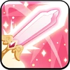

Toppings:


Los Crème Knights son una institución noble, conocida no solo por su rica tradición de ceremonias y buen comportamiento, sino también por el
paladín que viste con volantes: ¡Kouign-Amann Cookie! No dejes que su encantadora apariencia te distraiga; Esta Cookie está bendecida por la
Luz misma y puede derrotar incluso a Paladines experimentados con solo un movimiento de su espada. Siempre se mantiene
fiel a su camino y lucha con honor.
"¡Contempla al honorable Paladín ante ti!"
Esta piedra contiene un pedazo del alma de Kouign-Amann Cookie. ¡El resplandor de esta piedra te llena de confianza para superar tu miedo!


Después de usar la habilidad, Kouign-Amann Cookie canaliza el poder de la luz, mejorando sus ataques regulares: causan daño de tipo Luz
y daño adicional cada vez que obtiene una mejora de ATK SPD. Kouign-Amann Cookie también aumentará la VEL ATK de las dos Cookies con la
VEL ATK más alta, hará que todos sus aliados sean resistentes a las desventajas de VEL ATK y aumentará DAÑO de tipo Luz infligido por
otras Cookies.